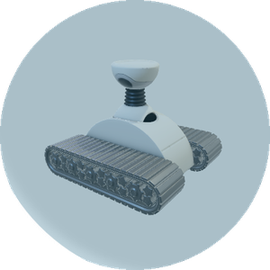
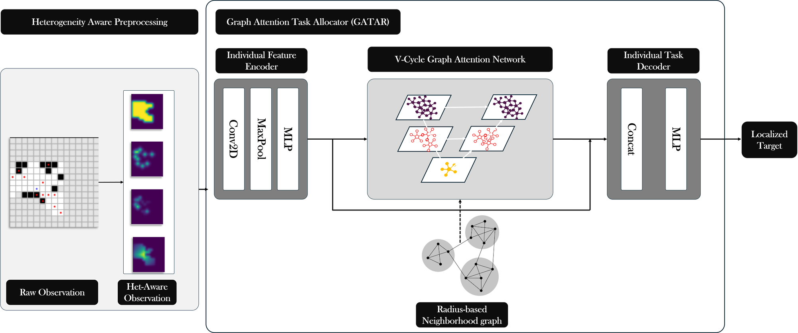
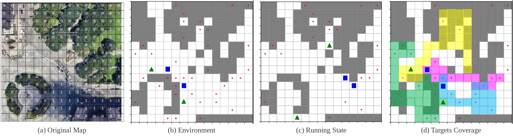
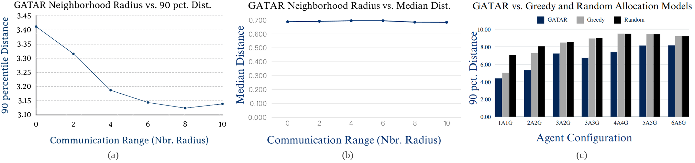

We introduce a new graph neural operator-based approach for task allocation in a system of heterogeneous robots composed of Unmanned Ground Vehicles (UGVs) and Unmanned Aerial Vehicles (UAVs). The proposed model, GATAR, or Graph Attention Task AllocatoR aggregates information from neighbors in the multi-robot system, with the aim of achieving globally optimal target localization. Being decentralized, our method is highly robust and adaptable to situations where the number of robots and the number of tasks may change over time. We also propose a heterogeneity-aware preprocessing technique to model the heterogeneity of the system. The experimental results demonstrate the effectiveness and scalability of the proposed approach in a range of simulated scenarios generated by varying the number of UGVs and UAVs and the number and location of the targets. We show that a single model can handle a heterogeneous robot team with a number of robots ranging between 2 and 12 while outperforming the baseline architectures.

Robots differ in perception (whether ground obstacles occlude their line of sight) and mobility (whether ground obstacles impede them). Each robot encodes both into a four-channel spatial feature map: a reward map that favours regions reachable by short paths, a Gaussian target map centred on each observed target, a Boolean map of observed obstacles, and the pixel-wise product of the reward and target maps. The reward for robot \(i\) moving to a location \(l\) in its observed region \(E_i\) is
where \(v_i\) is the robot's velocity and \(d_{i,l}\) the length of the shortest path to \(l\).
Robots exchange their local features with every neighbor inside a communication radius. To capture long-range information with linear complexity, GATAR adapts the V-cycle of the Multipole Graph Kernel Network: the radius graph is decomposed into levels, information is passed down and back up through them, and each level uses multi-head graph attention to weight a varying number of neighbors. The residual V-cycle structure also counters over-smoothing, which would otherwise assign the same task to every robot in a neighborhood. The model is trained with supervision from a centralized greedy expert, and runs fully decentralized at test time.


| Method | 90-pct. dist. ↓ | median dist. ↓ | mean dist. ↓ |
|---|---|---|---|
| GATAR | 4.3928 | 0.8156 | 1.6308 |
| GNN | 4.5618 | 0.8755 | 1.7180 |
| GNN + V-Cycle | 4.6152 | 0.8452 | 1.6996 |
| MAGAT | 5.4553 | 0.8588 | 1.8746 |
Distance between predicted and expert-assigned targets, 6 UAVs + 6 UGVs.
@article{peng2024graph,
title = {Graph-based Decentralized Task Allocation for Multi-Robot Target Localization},
author = {Peng, Juntong and Viswanath, Hrishikesh and Bera, Aniket},
journal = {IEEE Robotics and Automation Letters},
year = {2024}
}